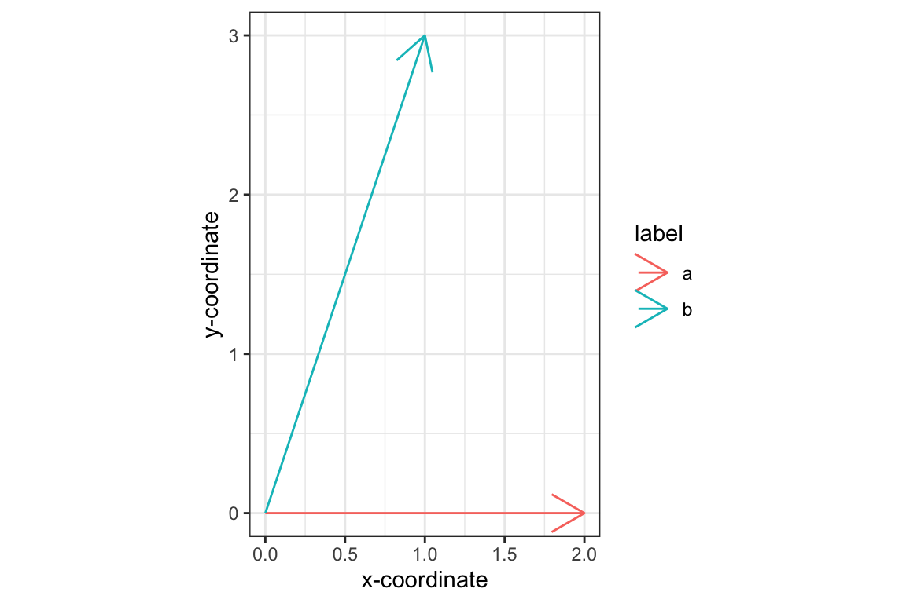
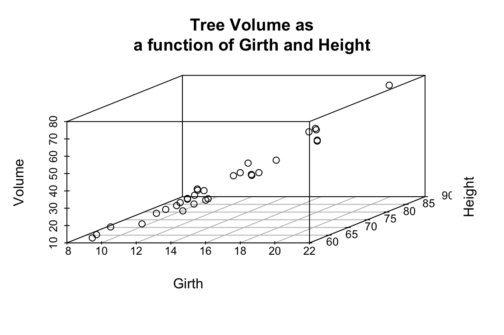
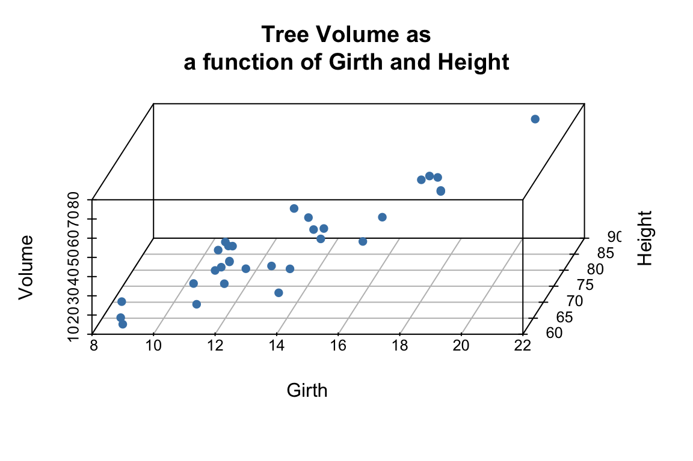
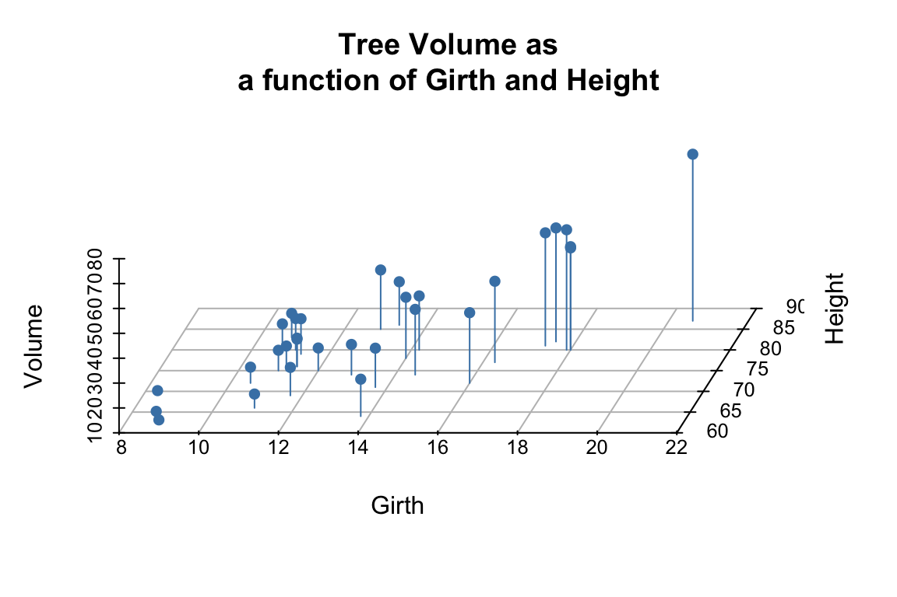
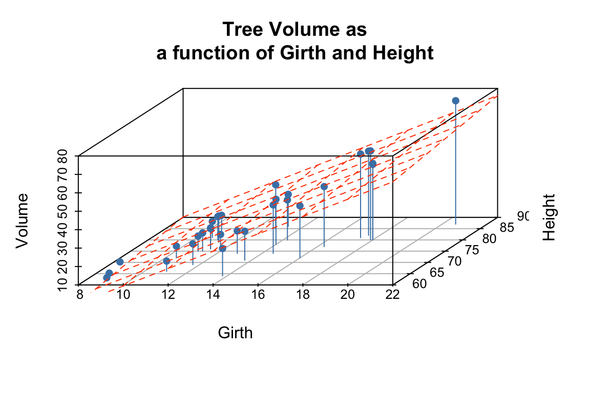
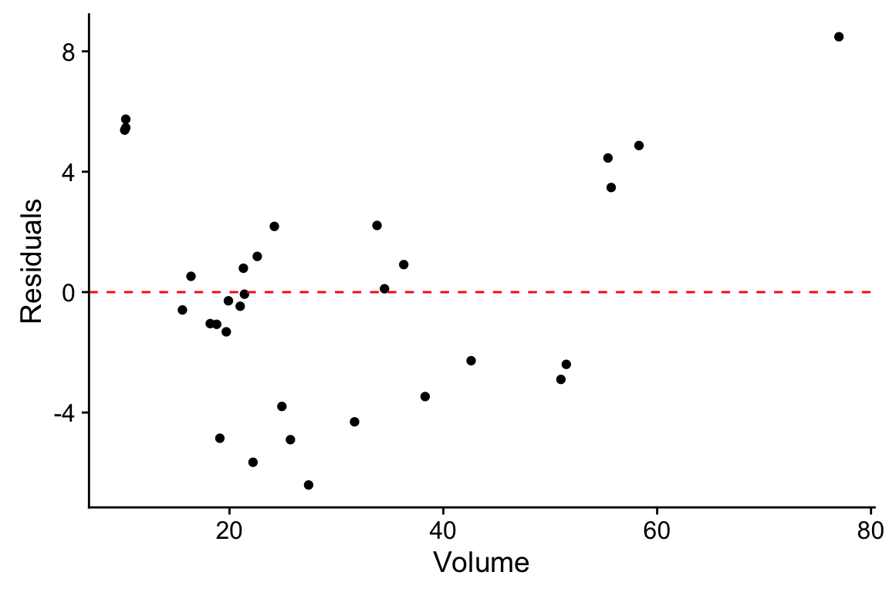
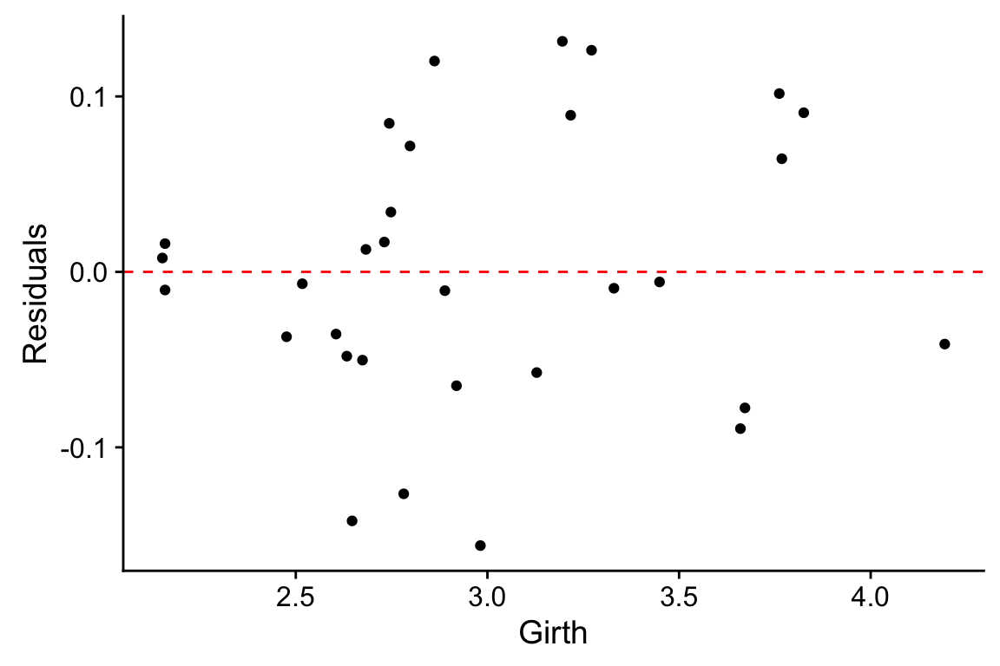
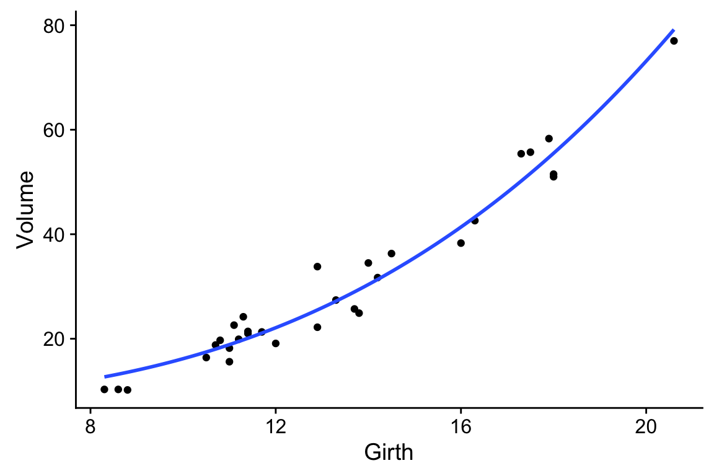
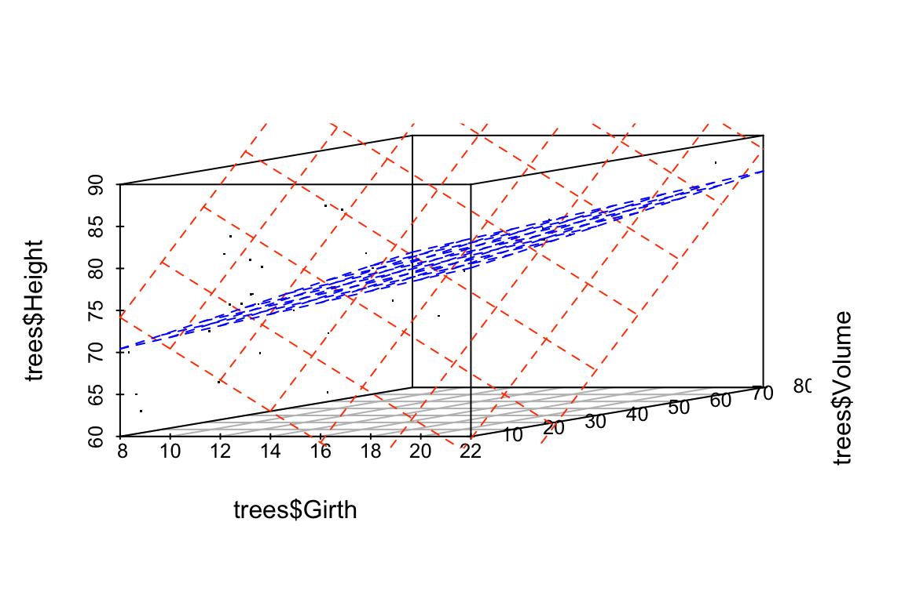
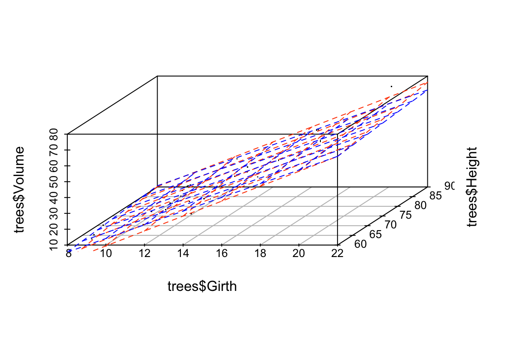

Chapter 11 Multiple Regression
11.1 New Libraries to install
We’ll be using several new packages for this class session. Install the following packages via one of the standard install mechanisms:
scatterplot3drgl– NOTE: On OS X,rglrequires you to install a program called XQuartz. XQuartz can be downloaded from the XQuartz Home Page. If you’re on a Mac, install XQuartz before installingrgl. You may have to reboot your computer after installing XQuartz.
11.2 Libraries
library(tidyverse)
library(broom) # for working w/lm output11.3 Examplar data
To illustrate multiple regression in R we’ll use a built in dataset called trees. trees consists of measurements of the girth, height, and volume of 31 black cherry trees (?trees for more info).
Let’s assume we’re lumberjacks, but our permit only allows us to harvest a fixed number of trees. We get paid by the total volume of wood we harvest, so we’re interested in predicting a tree’s volume (hard to measure directly) as a function of its girth and height (relatively easy to measure), so we can pick the best trees to harvest. We’ll therefore calculate a multiple regression of volume on height and width.
11.4 Data exploration
We’ll start with some summary tables and diagnostic plots to familiarize ourselves with the data:
names(trees)
[1] "Girth" "Height" "Volume"
dim(trees)
[1] 31 3
summary(trees)
Girth Height Volume
Min. : 8.30 Min. :63 Min. :10.20
1st Qu.:11.05 1st Qu.:72 1st Qu.:19.40
Median :12.90 Median :76 Median :24.20
Mean :13.25 Mean :76 Mean :30.17
3rd Qu.:15.25 3rd Qu.:80 3rd Qu.:37.30
Max. :20.60 Max. :87 Max. :77.00 We’ll use the GGally::ggpairs() function introduced in problem set 01 to create a scatterplot matrix depicting the pairwise relationships between all the variables
library(GGally)
ggpairs(trees)
As one might expect for morphological measurements related to size, the scatterplot matrix shows that all the variables are positively correlated, and girth and volume have a particularly strong correlation.
11.5 3D Plots
ggplot has no built in facilities for 3D scatter plots so we’ll use two new packages, scatterplot3D and rgl, to generate 3D visualizations.
11.5.1 scatterplot3d
library(scatterplot3d) # install this package first if needed
scatterplot3d(trees,
main = 'Tree Volume as\na function of Girth and Height')
The argument pch sets the type of plotting character to use in the plot (for a graphical key of the available plotting characters see this link) and color sets plotting character colors. We can change the angle of the 3D plot using the angle argument:
scatterplot3d(trees,
pch = 16, color="steelblue",
angle=75,
main = 'Tree Volume as\na function of Girth and Height')
We can add vertical lines to the plot using the type argument and remove the box around the plot:
scatterplot3d(trees,
pch = 16,
color="steelblue",
angle=75,
box = FALSE,
type = "h",
main = 'Tree Volume as\na function of Girth and Height')
For more examples of how you can modify plots generated with the scatterplot3d package see this web page).
11.5.2 rgl
The package rgl is another package that we can use for 3D visualization. rgl is powerful because it lets us create interactive plots we can rotate and zoom in/out on.
To make rgl plots work in HTML document, make your codeblock start with this header:
{r, results = "asis"}You can then create an interactive 3D plot as so:
library(rgl)
# create 3D scatter, using spheres to draw points
plot3d(trees$Girth, trees$Height, trees$Volume,
xlab = "Girth", ylab = "Height", zlab = "Volume",
type = "s",
size = 1.5,
col = "red")
rglwidget() # only need to include this line if using in a markdown document11.6 Fitting the regression model
From the 3D scatter plot it looks like we ought to be able to find a plane through the data that fits the scatter fairly well.
Let’s use the lm() function to calculate the multiple regression and summary() to get the details of the model:
fit.trees <- lm(Volume ~ Girth + Height, data=trees)
summary(fit.trees)
Call:
lm(formula = Volume ~ Girth + Height, data = trees)
Residuals:
Min 1Q Median 3Q Max
-6.4065 -2.6493 -0.2876 2.2003 8.4847
Coefficients:
Estimate Std. Error t value Pr(>|t|)
(Intercept) -57.9877 8.6382 -6.713 2.75e-07 ***
Girth 4.7082 0.2643 17.816 < 2e-16 ***
Height 0.3393 0.1302 2.607 0.0145 *
---
Signif. codes: 0 '***' 0.001 '**' 0.01 '*' 0.05 '.' 0.1 ' ' 1
Residual standard error: 3.882 on 28 degrees of freedom
Multiple R-squared: 0.948, Adjusted R-squared: 0.9442
F-statistic: 255 on 2 and 28 DF, p-value: < 2.2e-1611.6.1 Visualizing the regression model in scatterplot3d
To visualize the multiple regression, let’s use the scatterplot3d package to draw the 3D scatter of plots and the plane that corresponds to the regression model:
p <- scatterplot3d(trees, angle=55,type='h',
pch = 16, color = "steelblue",
main = 'Tree Volume as\na function of Girth and Height')
# add a plane representing the fit of the model
p$plane3d(fit.trees, col='orangered')
If instead of scatterplot3d, we wanted to use rgl to depict the model fit we can use the rgl.planes function as shown below.
coefs <- coef(fit.trees)
b1 <- coefs["Girth"]
b2 <- coefs["Height"]
c <- -1
a <- coefs["(Intercept)"]
plot3d(trees$Girth, trees$Height, trees$Volume,
xlab = "Girth", ylab = "Height", zlab = "Volume",
type = "s",
size = 1.5,
col = "red")
rgl.planes(b1, b2, c, a, alpha = 0.9, color = "gray")
rglwidget()From the figures it looks like the regression model fits pretty well, as we anticipated from the pairwise relationships.
11.7 Interpretting the regression model
The regression equation is: \(\hat{y}\) = + \(x_1\) +\(x_2\), where \(y\) is Volume, and \(x_1\) and \(x_2\) are Girth and Height respectively. Since they’re on different scales the coefficients for Girth and Height aren’t directly comparable. Both coefficients are significant at the \(p<0.05\) level, but note that Girth is the much stronger predictor. In fact the addition of height explains only a minor additional fraction of variation in tree volume, so from the lumberjack’s perspective the additional trouble of measuring height probably isn’t worth it.
11.8 Exploring the Vector Geometry of the Regression Model
The object returned by the lm() function hold lots of useful information:
names(fit.trees)
[1] "coefficients" "residuals" "effects" "rank"
[5] "fitted.values" "assign" "qr" "df.residual"
[9] "xlevels" "call" "terms" "model" The fitted.values correspond to the predicted values of the outcome variable (\(\hat{y}\)). Alternate we can get this information in useful table form using functions from the broom library:
Recall the broom:tidy produces a tabular summary of the coefficients of the model and their associated statistics:
broom::tidy(fit.trees)
term estimate std.error statistic p.value
1 (Intercept) -57.9876589 8.6382259 -6.712913 2.749507e-07
2 Girth 4.7081605 0.2642646 17.816084 8.223304e-17
3 Height 0.3392512 0.1301512 2.606594 1.449097e-02broom:glance provides information about the fit of the model:
broom::glance(fit.trees)
r.squared adj.r.squared sigma statistic p.value df logLik
1 0.94795 0.9442322 3.881832 254.9723 1.071238e-18 3 -84.45499
AIC BIC deviance df.residual
1 176.91 182.6459 421.9214 28Let’s use our knowledge of vector geometry to further explore the relationship between the predicted Volume and the predictor variables. By definition the vector representing the predicted values lies in the subspace (in this case a plane) defined by Height and Girth, so let’s do some simple calculations to understand their length and angular relationships:
# proportional to length of vectors
sd(fit.trees$fitted.values)
[1] 16.00434
sd(trees$Height)
[1] 6.371813
sd(trees$Girth)
[1] 3.138139
# cosines of angles btw vectors
cor(trees$Height, trees$Girth)
[1] 0.5192801
cor(trees$Girth, fit.trees$fitted.values)
[1] 0.9933158
cor(trees$Height, fit.trees$fitted.values)
[1] 0.6144545
# angles btw vectors in degrees
acos(cor(trees$Girth, trees$Height)) * (180/pi)
[1] 58.71603
acos(cor(trees$Girth, fit.trees$fitted.values)) * (180/pi)
[1] 6.628322
acos(cor(trees$Height, fit.trees$fitted.values)) * (180/pi)
[1] 52.0877111.9 Exploring the Residuals from the Model Fit
Now let’s look at the residuals from the regression. The residuals represent the `unexplained’ variance:
trees.augmented <- augment(fit.trees, trees)
ggplot(trees.augmented, aes(x = Volume, y = .resid)) +
geom_point() +
geom_hline(yintercept = 0, color='red', linetype='dashed') +
labs(x = "Volume", y = "Residuals")
Ideally the residuals should be evenly scattered around zero, with no trends as we go from high to low values of the dependent variable. As you can see, the residuals are somewhat u-shaped or j-shaped suggesting that there may be a non-linear aspect of the relationship that our model isn’t capturing.
11.10 An alternate model
Let’s think about the relationships we’re actually modeling for a few minutes. For the sake of simplicity let’s consider the trunk of a tree to be a cylinder. How do the dimensions of this cylinder relate to its volume? You can look up the formula for the volume of a cylinder, but the key thing you’ll want to note is that volume of the cylinder should be proportional to a characteristic length of the cylinder cubed (\(V \propto \mathrm{L}^3\)). This suggests that if we want to fit a linear model we should relate Girth and Height to \(\sqrt[3]{\mathrm{Volume}}\):
trees.cuberoot <- mutate(trees, cuberoot.Volume = Volume^0.33)
fit.trees.cuberoot <- lm(cuberoot.Volume ~ Girth + Height, data = trees.cuberoot)
broom::glance(fit.trees) # summary of fit of original model
r.squared adj.r.squared sigma statistic p.value df logLik
1 0.94795 0.9442322 3.881832 254.9723 1.071238e-18 3 -84.45499
AIC BIC deviance df.residual
1 176.91 182.6459 421.9214 28
broom::glance(fit.trees.cuberoot) # summary of fit of alternate model
r.squared adj.r.squared sigma statistic p.value df logLik
1 0.9776484 0.9760518 0.08108365 612.3532 7.768237e-24 3 35.47103
AIC BIC deviance df.residual
1 -62.94206 -57.20611 0.1840877 28Comparing the summary tables, we see indeed that using the cube root of Volume improves the fit of our model some. Let’s examine the residuals of this alternate model.
trees.cuberoot <- broom::augment(fit.trees.cuberoot, trees.cuberoot)
ggplot(trees.cuberoot, aes(x = cuberoot.Volume, y = .resid)) +
geom_point() +
geom_hline(yintercept = 0, color='red', linetype='dashed') +
labs(x = "Volume^0.33", y = "Residuals")
As we can see the transformation we applied to the data did seem to make our residuals more uniform across the range of observations.
11.11 Fitting a curvilinear model using lm()
Above we transformed the volume data in order to fit a straight line relationship between \(\sqrt[3]{V}\) and Girth and Hieght. However, we could just as easily have applied a cubic regression to the original variables (remember this is still linear in the coefficients). Since Height didn’t add much to additional information, we’ll simplify the model to consider only Girth.
fit.curvilinear <- lm(Volume ~ I(Girth^3), data=trees)
broom::tidy(fit.curvilinear)
term estimate std.error statistic p.value
1 (Intercept) 8.042696007 1.0426698301 7.71356 1.662577e-08
2 I(Girth^3) 0.008136533 0.0003117691 26.09795 1.086600e-21
broom::glance(fit.curvilinear)
r.squared adj.r.squared sigma statistic p.value df logLik
1 0.9591608 0.9577526 3.378663 681.1029 1.0866e-21 2 -80.69526
AIC BIC deviance df.residual
1 167.3905 171.6925 331.0456 29Here’s how we can visualize the corresponding curvilinear regression using ggplot:
ggplot(trees, aes(x = Girth, y = Volume)) +
geom_point() +
geom_smooth(method = "lm",
formula = y ~ I(x^3),
se = FALSE)
The I() function used above requires a little explanation. Normally, the R formula syntax (see ?formula) treats the carat symbol, ^, as short-hand for factor crossing to the specified degree. For example, the formula (a+b+c)^2 would be interpretted as the model with main effects and all second order interaction terms, i.e. a + b + c + a:b + a:c + b:c where the colons indicate interactions. The I() function `protects’ the object in it’s argument; in this case telling the regression function to treat this as Girth raised to the third power as opposed to trying to construct interaction terms for Girth.
11.12 Exploring the impact of nearly collinear predictors on regression
In lecture we discussed the problems that can arise in regression when your predictor variables are nearly collinear. In this section we’ll illustrate some of these issues.
Consider again the trees data set. Recall that two of the variables – Girth and Volume – are highly correlated and thus nearly collinear.
cor(trees)
Girth Height Volume
Girth 1.0000000 0.5192801 0.9671194
Height 0.5192801 1.0000000 0.5982497
Volume 0.9671194 0.5982497 1.0000000Let’s explore what happens when we treat Height as the dependent variable, and Girth and Volume as the predictor variables.
fit.Height <- lm(Height ~ Girth + Volume, data = trees)
broom::glance(fit.Height)
r.squared adj.r.squared sigma statistic p.value df logLik
1 0.4122678 0.3702869 5.056318 9.820371 0.0005868313 3 -92.64926
AIC BIC deviance df.residual
1 193.2985 199.0345 715.8579 28We can, of course, fit the linear model despite the near collinearity, and we find that the model does have some predictive power, with \(R^2 = 0.41\), and with Volume being the more significant predictor.
Now, let’s created a slightly different version of the trees data set by add some noise to the three variables. Our goal here is to simulate a data set we might have created had we measured a slightly different set of trees during our sampling. We’ll use the jitter() function to add uniform noise to the data set.
jitter.Girth <- jitter(trees$Girth, amount= 0.5 * sd(trees$Girth))
jitter.Height <- jitter(trees$Height, amount= 0.5 * sd(trees$Height))
jitter.Volume <- jitter(trees$Volume, amount= 0.5 * sd(trees$Volume))
jitter.trees <- data.frame(Girth = jitter.Girth,
Height = jitter.Height,
Volume = jitter.Volume)Here we added uniform noise proportional to the one-quarter the standard deviation of each variable. Let’s take a moment to convince ourselves that our new data set, jitter.trees, is not too different from the trees data set from which it was derived.
set.seed(20180228)
# compare this to broom::tidy(trees)
broom::tidy(jitter.trees)
column n mean sd median trimmed mad min
1 Girth 31 13.11343 3.293167 12.40383 12.87684 3.027458 7.741368
2 Height 31 75.75845 6.879267 76.23959 75.75662 6.205504 62.141359
3 Volume 31 29.55809 16.757459 26.07007 28.07203 15.617403 3.957182
max range skew kurtosis se
1 20.91050 13.16913 0.62534178 -0.5479970 0.5914703
2 89.55392 27.41256 -0.05841023 -0.8243920 1.2355528
3 71.03391 67.07673 0.68833906 -0.4459555 3.0097285
# correlations among jittered variables are
# similar to those of the original variables
cor(jitter.trees)
Girth Height Volume
Girth 1.0000000 0.5780343 0.8957712
Height 0.5780343 1.0000000 0.6010398
Volume 0.8957712 0.6010398 1.0000000
## jittered variables are highly correlatd with original variables
cor(trees$Height, jitter.trees$Height)
[1] 0.9562267
cor(trees$Girth, jitter.trees$Girth)
[1] 0.9636629
cor(trees$Volume, jitter.trees$Volume)
[1] 0.9528885Now that we’ve convinced ourselves that our jittered data set is a decent approximation to our original data set, let’s re-calculate the linear regression, and compare the coefficients of the jittered model to the original model:
fit.Height.jitter <- lm(Height ~ Girth + Volume, data = jitter.trees)
broom::tidy(fit.Height)
term estimate std.error statistic p.value
1 (Intercept) 83.2957705 9.0865753 9.166905 6.333488e-10
2 Girth -1.8615109 1.1566879 -1.609346 1.187591e-01
3 Volume 0.5755946 0.2208225 2.606594 1.449097e-02
broom::tidy(fit.Height.jitter)
term estimate std.error statistic p.value
1 (Intercept) 65.1503985 5.9564335 10.9378202 1.283349e-11
2 Girth 0.4190737 0.7053554 0.5941313 5.571946e-01
3 Volume 0.1729664 0.1386161 1.2478092 2.224360e-01We see that the coefficients of the linear model have changed substantially between the original data and the jittered data. Our model is unstable to relatively modest changes to the data!
Let’s draw some plots to illustrate how different the models fit to the original and jittered data are:
# draw 3d scatter plots with small points so as not to obscure regression planes
p <- scatterplot3d(x=trees$Girth, y=trees$Volume, z=trees$Height,
angle=15, type='p', pch='.')
# original model
p$plane3d(fit.Height, col='orangered')
# jittered model
p$plane3d(fit.Height.jitter, col='blue')
Let’s do the same comparison for the multiple regression of Volume on Height and Girth. In this case the predictor variables are nearly collinear.
fit.Volume <- lm(Volume ~ Girth + Height, data = trees)
fit.Volume.jitter <- lm(Volume ~ Girth + Height, data = jitter.trees)
coefficients(fit.Volume)
(Intercept) Girth Height
-57.9876589 4.7081605 0.3392512
coefficients(fit.Volume.jitter)
(Intercept) Girth Height
-48.4658371 4.1904276 0.3045607 For this model, we see that the coefficients have changed only a small amount. The underlying data, jitter.trees, is the same in both cases, but now our model is stable because the predictor variables are only modestly correlated with each other.
Let’s generate another plot to illustrate the similarity of the models fit to the original and jittered data when Girth and Height are used to predict Volume.
p <- scatterplot3d(x=trees$Girth, y=trees$Height, z=trees$Volume,
angle=55, type='p', pch='.')
p$plane3d(fit.Volume, col='orangered')
p$plane3d(fit.Volume.jitter, col='blue')
Finally, let’s do some vector calculations to quantify how the angular deviation between the fit data and the predictor variables changes between the original and jittered data set for the two different multiple regressions:
# write a quickie fxn to express angle between vectors in degrees
vec.angle <- function(x,y) { acos(cor(x,y)) * (180/pi)}
# vector angles for fit of Height ~ Girth + Volume (orig)
vec.angle(fit.Height$fitted.values, trees$Girth)
[1] 36.02644
vec.angle(fit.Height$fitted.values, trees$Volume)
[1] 21.29297
# vector angles for fit of Height ~ Girth + Volume (jittered)
vec.angle(fit.Height.jitter$fitted.values, jitter.trees$Girth)
[1] 17.95294
vec.angle(fit.Height.jitter$fitted.values, jitter.trees$Volume)
[1] 8.439398Now the same comparison for the non-collinear model Volume ~ Girth + Height.
# vector angles for fit of Volume ~ Girth + Height (orig)
vec.angle(fit.Volume$fitted.values, trees$Girth)
[1] 6.628322
vec.angle(fit.Volume$fitted.values, trees$Height)
[1] 52.08771
# vector angles for fit of Volume ~ Girth + Height (jittered)
vec.angle(fit.Volume.jitter$fitted.values, jitter.trees$Girth)
[1] 6.497745
vec.angle(fit.Volume.jitter$fitted.values, jitter.trees$Height)
[1] 48.18985